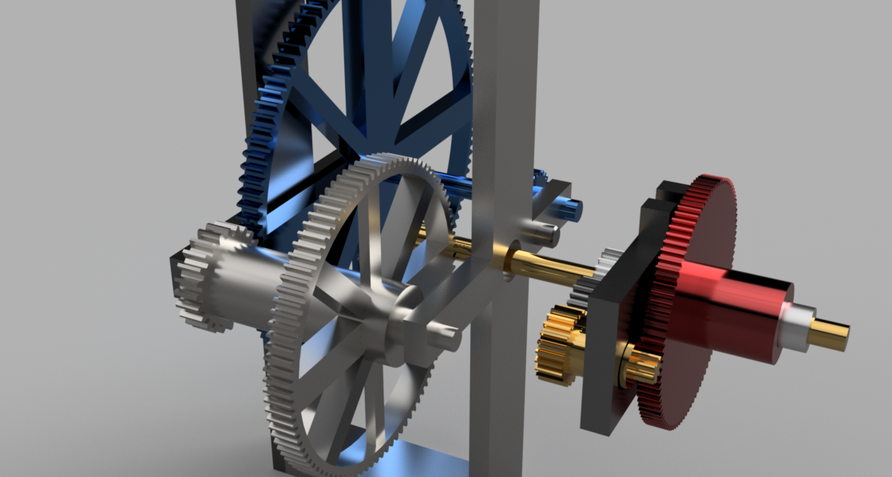
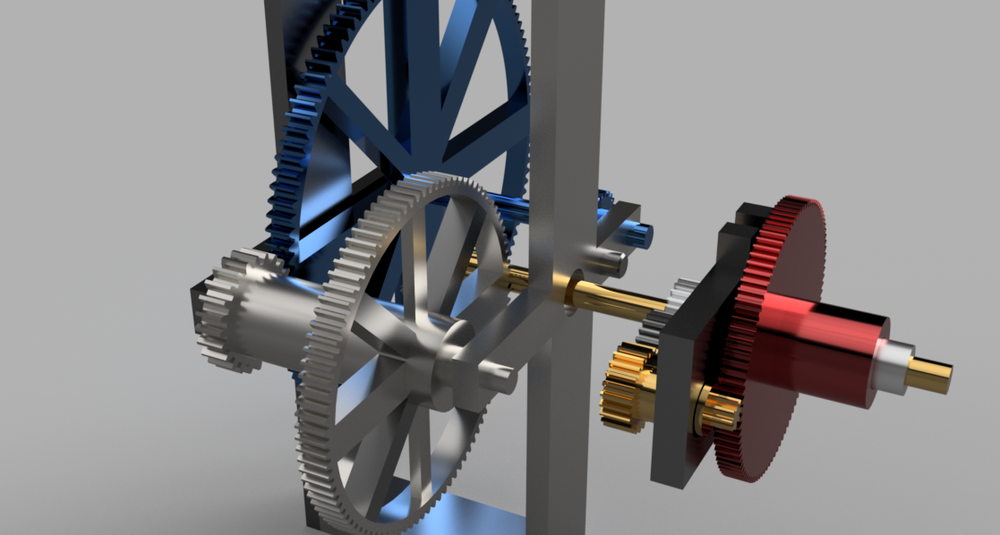

Tick, Tock.
A 3D printed, mechanical clock.
The Process
Currently, I'm designing and building a fully functional mechanical clock. The design is done in Fusion360, as opposed to Vectorworks, and is currently being 3D printed and assembled.
This project will be in progress for the forseable future.
 

The results
A simple prototype of the gear ratio between the hours and minutes hand has been assembled. However, the joint of the large gear is too tight for it to work properly. This is unfortunate.
The current difficulty is tolerance: the 3D printer is unable to print parts to the neccesary accuracy, so there are two current possibilities:
- Further research into 3d printed mechanical parts, and do a detailed study into the necessary tolerance adjustments needed.
- Laser cut the gears out of an alternative material such as wood or acrylic.